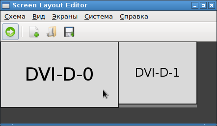

В LXDE есть утилита lxrandr. После ее настройки, в каталоге
/home/%user%/.config/autostart
появляется файлик lxrandr-autostart.desktop.
Его содержимое примерно следующее:
[Desktop Entry]
Type=Application
Name=LXRandR autostart
Comment=Start xrandr with settings done in LXRandR
Exec=xrandr --output CRT2 --mode 1280x768 --rate 60.0 --output DFP1 --mode 1920x1080 --rate 60.0 --right-of CRT2
OnlyShowIn=LXDE
Именно эти параметры xrandr будут применены автоматически, причем момент применения будет после успешной инициализации продсистемы X, то есть, данные параметры точно будут применены.
Проблема утилиты lxrandr в том, что она не позволяет точно расставить экраны как нужно, непример в ней невозможно выровнять экраны по нижнему краю. Поэтому в качестве опций xrandr можно в строку Exec прописать параметры утилиты arandr, которая умеет перемещать п переопределять экраны:

Эта утилита сохраняет свои настройки в файл формата *.sh, и в нем просто прописывается команда xrandr с настроенными опциями. Можно открыть этот файл на редактирование, взять опции xrandr, и вставить их в файл /home/%user%/.config/autostart.